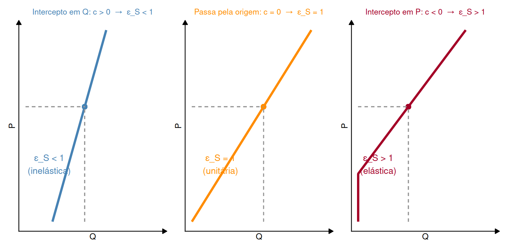
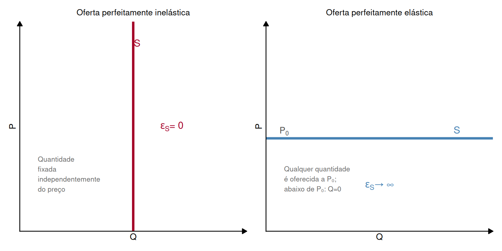
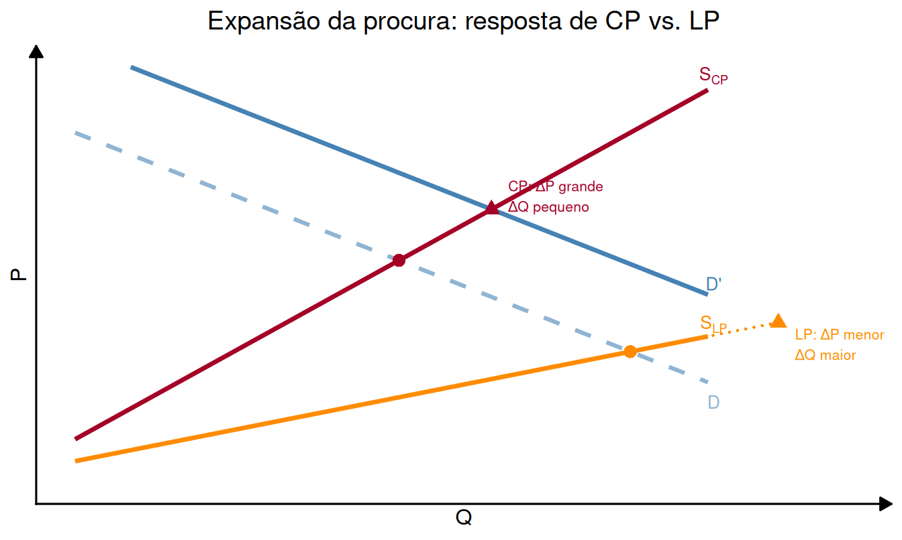

Microeconomia
Elasticidade Preço da Oferta
1 Definição e Fórmula
1.1 Elasticidade Preço da Oferta
NoteElasticidade Preço da Oferta
Mede a variação percentual da quantidade oferecida quando o preço varia 1%, tudo o resto constante: \[\varepsilon_S = \frac{\Delta\% Q_S}{\Delta\% P} = \frac{\Delta Q_S}{\Delta P} \cdot \frac{P}{Q_S}\]
. . .
Como \(Q_S\) e \(P\) variam no mesmo sentido (Lei da Oferta), \(\varepsilon_S \geq 0\) sempre.
. . .
Classificação:
| \(\varepsilon_S\) | Classificação |
|---|---|
| \(> 1\) | Oferta elástica |
| \(= 1\) | Elasticidade unitária |
| \(< 1\) | Oferta inelástica |
1.2 Cálculo para Oferta Linear
Para \(Q_S = c + dP\) (com \(d > 0\)):
\[\frac{dQ_S}{dP} = d \quad \Rightarrow \quad \varepsilon_S = d \cdot \frac{P}{Q_S}\]
. . .
TipNota importante
Tal como na procura, numa oferta linear \(\varepsilon_S\) varia ao longo da curva — o mesmo \(d\) produz elasticidades diferentes conforme o ponto \((P, Q_S)\).
A exceção notável: uma oferta que passa pela origem tem sempre \(\varepsilon_S = 1\).
2 Uma Propriedade Geométrica Notável
2.1 Elasticidade e o Intercepto da Oferta
Para uma oferta linear \(Q_S = c + dP\), a elasticidade depende do sinal de \(c\):
. . .
. . .
- \(c > 0\) (intercepto no eixo \(Q\)): oferta inelástica em todos os pontos
- \(c = 0\) (passa pela origem): elasticidade unitária em todos os pontos
- \(c < 0\) (intercepto no eixo \(P\)): oferta elástica em todos os pontos
2.2 Porquê esta propriedade geométrica?
Para \(Q_S = dP\) (origem): \(\quad\varepsilon_S = d \cdot \dfrac{P}{dP} = 1\) em qualquer ponto.
. . .
Para \(Q_S = c + dP\) com \(c > 0\): \(\quad\varepsilon_S = d \cdot \dfrac{P}{c + dP} < d \cdot \dfrac{P}{dP} = 1\)
. . .
Para \(Q_S = c + dP\) com \(c < 0\) (e \(Q_S > 0\)): \(\quad\varepsilon_S = d \cdot \dfrac{P}{c + dP} > 1\)
. . .
TipRegra prática
Numa oferta linear, basta ver onde a reta interseta os eixos:
- Corta o eixo \(Q\) → inelástica
- Passa pela origem → unitária
- Corta o eixo \(P\) → elástica
3 Casos Extremos
3.1 Oferta Perfeitamente Inelástica e Elástica

- \(\varepsilon_S = 0\): quantidade independente do preço — ex.: obra de arte única, recurso natural esgotado, capacidade máxima física a curto prazo
- \(\varepsilon_S \to \infty\): produtores oferecem qualquer quantidade ao preço \(P_0\) — ex.: bem produzido com custo marginal constante e sem restrições de capacidade
4 Fatores que Determinam \(\varepsilon_S\)
4.1 O que torna uma oferta mais ou menos elástica?
Disponibilidade e mobilidade dos fatores de produção
A oferta de pizzas é mais elástica do que a oferta de morangos fora de época — o produtor de pizza pode aumentar a produção facilmente, mas o morangueiro não.
. . .
Capacidade produtiva instalada
A oferta de lugares numa aeronave é perfeitamente elástica até esgotar a capacidade e perfeitamente inelástica após isso.
. . .
Período de tempo
A oferta de longo prazo é sempre mais elástica do que a de curto prazo. Com mais tempo, os produtores conseguem ajustar capital, contratar mais fatores e redirecionar a produção.
4.2 Curto Prazo vs. Longo Prazo

. . .
Uma expansão da procura provoca, a curto prazo, um grande aumento de preço com pouco aumento de quantidade. A longo prazo, a oferta expande-se mais — o preço sobe menos e a quantidade aumenta mais.
5 Quadro Comparativo
5.1 Elasticidade da Procura vs. da Oferta
| Procura \((\varepsilon_D)\) | Oferta \((\varepsilon_S)\) | |
|---|---|---|
| Sinal | \(\leq 0\) (sempre) | \(\geq 0\) (sempre) |
| Trabalha-se com | \(\|\varepsilon_D\|\) | \(\varepsilon_S\) |
| Numa linear: varia? | Sim, ao longo da curva | Sim, ao longo da curva |
| Exceção (linear) | — | Passa pela origem → \(\varepsilon_S = 1\) sempre |
| \(> 1\) significa | Procura elástica | Oferta elástica |
| \(= 0\) significa | Procura perfeitamente rígida | Oferta perfeitamente rígida |
| Prazo | LP mais elástica | LP mais elástica |
. . .
ImportantSimetria com a procura
A elasticidade da oferta tem a mesma lógica e fórmula que a elasticidade preço-direta da procura — a única diferença estrutural é o sinal (positivo vs. negativo) e o facto de a oferta poder ser unitária em todos os pontos quando passa pela origem.
6 Exercícios
6.1 Exercício 1 — Escolha Múltipla
A função de oferta de um mercado é \(Q_S = 3P + 6\). Qual é a elasticidade preço da oferta quando \(P = 6\)?
\(\varepsilon_S = 1\)
\(\varepsilon_S = 3\)
\(\varepsilon_S = \dfrac{3}{4}\)
\(\varepsilon_S = \dfrac{3}{2}\)
6.2 Exercício 1 — Solução
Resolução:
\[\frac{dQ_S}{dP} = 3\]
. . .
Quando \(P = 6\): \(\quad Q_S = 3(6) + 6 = 24\)
. . .
\[\varepsilon_S = \frac{dQ_S}{dP} \cdot \frac{P}{Q_S} = 3 \times \frac{6}{24} = \frac{18}{24} = \mathbf{\frac{3}{4}}\]
. . .
\(\varepsilon_S = 0{,}75 < 1\) → oferta inelástica.
Note: \(c = 6 > 0\) (intercepto positivo no eixo \(Q\)) → confirma oferta inelástica em todos os pontos.
Resposta: C)
6.3 Exercício 2 — Escolha Múltipla
Qual das seguintes afirmações é verdadeira acerca de uma oferta linear que passa pela origem (\(Q_S = bP\), com \(b > 0\))?
A elasticidade aumenta à medida que o preço sobe
A elasticidade é sempre igual a 1, independentemente do preço
A elasticidade é sempre maior do que 1
A elasticidade depende do valor de \(b\)
6.4 Exercício 2 — Solução
Resolução:
Para \(Q_S = bP\):
\[\varepsilon_S = \frac{dQ_S}{dP} \cdot \frac{P}{Q_S} = b \cdot \frac{P}{bP} = \frac{bP}{bP} = \mathbf{1}\]
. . .
O resultado é exatamente 1 para qualquer valor de \(P\) e qualquer valor de \(b > 0\).
. . .
A razão geométrica: a reta passa pela origem, logo o “triângulo” formado pela curva e os eixos mantém sempre a mesma proporção entre \(P\) e \(Q\) em qualquer ponto.
. . .
Resposta: B)
6.5 Exercício 3 — Desenvolvimento
A função de oferta de um bem é \(Q_S = 4P - 8\).
(a) Calcule a elasticidade preço da oferta em \(P = 4\), \(P = 6\) e \(P = 10\).
(b) A oferta é elástica, inelástica ou unitária nestes pontos? Justifique geometricamente.
(c) Compare com a oferta \(Q_S' = 4P\). Calcule \(\varepsilon_S\) para \(Q_S'\) nos mesmos preços e interprete a diferença.
6.6 Exercício 3 — Resolução (a) e (b)
Alínea (a): \(\dfrac{dQ_S}{dP} = 4\)
. . .
| \(P\) | \(Q_S = 4P-8\) | \(\varepsilon_S = 4 \cdot \dfrac{P}{Q_S}\) | Classificação |
|---|---|---|---|
| 4 | 8 | \(4 \times \dfrac{4}{8} = 2\) | Elástica |
| 6 | 16 | \(4 \times \dfrac{6}{16} = \dfrac{3}{2}\) | Elástica |
| 10 | 32 | \(4 \times \dfrac{10}{32} = \dfrac{5}{4}\) | Elástica |
. . .
Alínea (b): A oferta \(Q_S = 4P - 8\) tem intercepto no eixo \(P\) quando \(Q_S = 0 \Rightarrow P = 2 > 0\).
Qualquer oferta linear que corte o eixo \(P\) (e não o eixo \(Q\), nem passe pela origem) é sempre elástica (\(\varepsilon_S > 1\) em todos os pontos).
6.7 Exercício 3 — Resolução (c)
Alínea (c): Para \(Q_S' = 4P\):
\[\varepsilon_S' = 4 \cdot \frac{P}{4P} = 1 \quad \text{em qualquer } P\]
. . .
| \(P\) | \(Q_S = 4P-8\) | \(\varepsilon_S\) | \(Q_S' = 4P\) | \(\varepsilon_S'\) |
|---|---|---|---|---|
| 4 | 8 | 2 | 16 | 1 |
| 6 | 16 | 1,5 | 24 | 1 |
| 10 | 32 | 1,25 | 40 | 1 |
. . .
TipInterpretação
Ambas as ofertas têm o mesmo declive (\(d=4\)), mas \(Q_S = 4P - 8\) passa pelo ponto \((0, 2)\) no eixo \(P\) — o produtor só começa a oferecer acima de \(P = 2\). Esta “barreira de entrada” torna a oferta mais elástica do que a que passa pela origem, onde o produtor oferece desde \(P = 0\).
7 Síntese
7.1 Resumo da Aula
Fórmula: \(\varepsilon_S = \dfrac{dQ_S}{dP} \cdot \dfrac{P}{Q_S} \geq 0\) sempre
. . .
Regra geométrica para oferta linear:
- Corta eixo \(Q\) (\(c > 0\)) → inelástica em todos os pontos
- Passa pela origem (\(c = 0\)) → unitária em todos os pontos
- Corta eixo \(P\) (\(c < 0\)) → elástica em todos os pontos
. . .
Fatores determinantes:
- Disponibilidade e mobilidade dos fatores
- Capacidade produtiva instalada
- Período de tempo: \(\varepsilon_S^{LP} > \varepsilon_S^{CP}\) sempre
. . .
ImportantPara a próxima aula
Na aula 25 estudaremos como os impostos se repartem entre consumidores e produtores — e veremos que a relação \(|\varepsilon_D|/\varepsilon_S\) determina exactamente essa repartição.